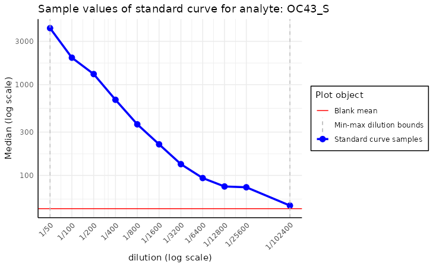
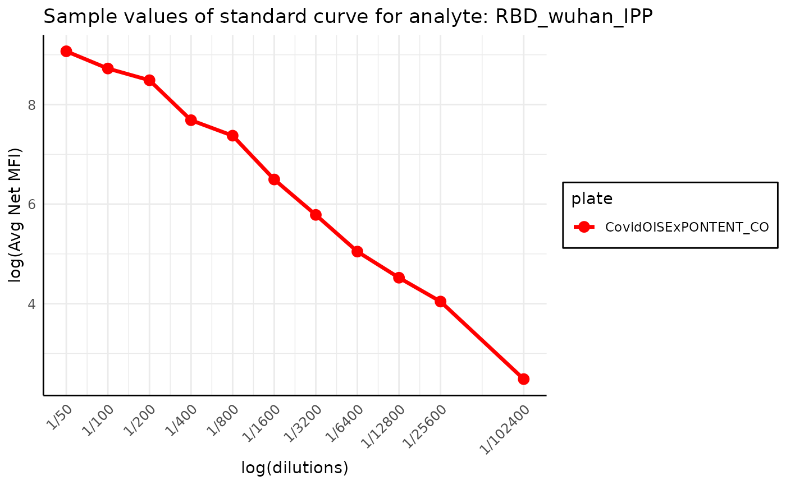
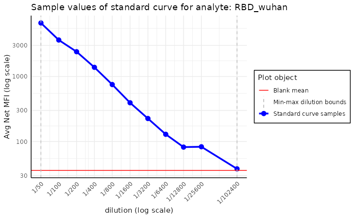
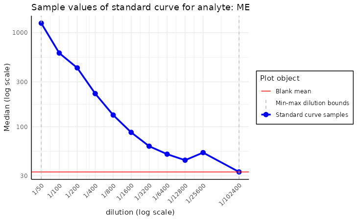
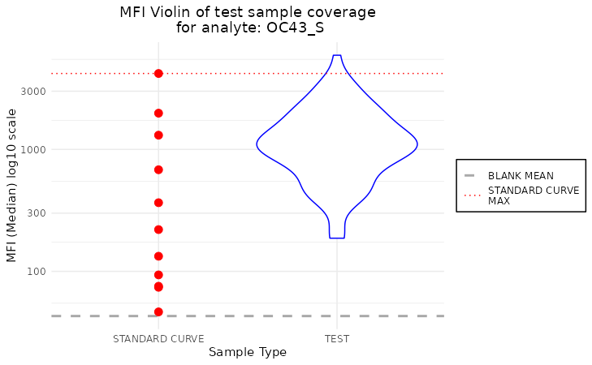

Basic PvSTATEM functionalities
Tymoteusz Kwieciński
2024-09-04
Source:vignettes/example_script.Rmd
example_script.RmdIntroduction
The basic functionality of the PvSTATEM package is
reading raw MBA data. To present the package’s functionalities, we use a
sample dataset from the Covid OISE study, which is pre-loaded into the
package. You might want to replace these variables with paths to your
files on your local disk. Firstly, let us load the dataset as the
plate object.
library(PvSTATEM)
plate_filepath <- system.file("extdata", "CovidOISExPONTENT.csv", package = "PvSTATEM", mustWork = TRUE) # get the filepath of the csv dataset
layout_filepath <- system.file("extdata", "CovidOISExPONTENT_layout.xlsx", package = "PvSTATEM", mustWork = TRUE)
plate <- read_luminex_data(plate_filepath, layout_filepath) # read the data#> Reading Luminex data from: /home/runner/work/_temp/Library/PvSTATEM/extdata/CovidOISExPONTENT.csv
#> using format xPONENT
#>
#> New plate object has been created with name: CovidOISExPONTENT!
#>
plate#> Plate with 96 samples and 30 analytesAfter the plate is successfully loaded, we can look at some basic information about it.
plate$summary()#> Summary of the plate with name 'CovidOISExPONTENT':
#> Total number of samples: 96
#> Number of blank samples: 1
#> Number of standard curve samples: 11
#> Number of positive control samples: 0
#> Number of negative control samples: 0
#> Number of test samples: 84
#> Number of analytes: 30
plate$summary(include_names = TRUE) # more detailed summary#> Summary of the plate with name 'CovidOISExPONTENT':
#> Total number of samples: 96
#> Number of blank samples: 1
#> Number of standard curve samples: 11
#> Sample names: '1/50', '1/100', '1/200', '1/400', '1/800', '1/1600', '1/3200', '1/6400', '1/12800', '1/25600', '1/102400'
#> Number of positive control samples: 0
#> Number of negative control samples: 0
#> Number of test samples: 84
#> Number of analytes: 30
plate$sample_names#> [1] "B" "1/50" "1/100" "1/200"
#> [5] "1/400" "1/800" "1/1600" "1/3200"
#> [9] "1/6400" "1/12800" "1/25600" "1/102400"
#> [13] "CO-F-226-01-CF" "CO-F-263-02-KC" "CO-F-080-02-TV" "CO-F-215-01-BA"
#> [17] "CO-H-SD-039-BC" "CO-H-RD-053-MO" "CO-F-030-01-LA" "CO-F-204-01-TC"
#> [21] "CO-F-009-01-CS" "CO-F-156-02-GB" "CO-F-402-03-DE" "CO-H-SK-021-BC"
#> [25] "CO-F-226-02-CM" "CO-F-266-01-LC" "CO-F-080-03-TA" "CO-F-215-02-BN"
#> [29] "CO-H-SD-042-DD" "CO-H-RK-002-BA" "CO-F-031-01-LD" "CO-F-204-02-TT"
#> [33] "CO-F-021-03-DF" "CO-F-156-03-GN" "CO-F-402-04-DR" "CO-H-SK-023-DC"
#> [37] "CO-F-226-03-CG" "CO-F-272-01-DF" "CO-F-080-04-TM" "CO-F-215-03-BA"
#> [41] "CO-H-SK-004-GA" "CO-H-RK-004-WN" "CO-F-112-01-CN" "CO-F-220-01-VV"
#> [45] "CO-F-028-01-PJ" "CO-F-214-01-SP" "CO-F-402-05-DS" "CO-H-SK-029-LC"
#> [49] "CO-F-234-01-LC" "CO-F-310-01-DC" "CO-F-082-01-OF" "CO-F-299-01-CS"
#> [53] "CO-H-SK-006-MS" "CO-H-RK-007-CJ" "CO-F-180-01-PN" "CO-F-243-01-BL"
#> [57] "CO-F-124-01-SV" "CO-F-237-01-LE" "CO-H-SD-002-WL" "CO-H-SK-030-MJ"
#> [61] "CO-F-234-02-LS" "CO-F-311-01-PC" "CO-F-089-01-DP" "CO-F-325-01-LN"
#> [65] "CO-H-SK-011-CC" "CO-H-RK-009-MB" "CO-F-180-02-DM" "CO-F-243-02-SH"
#> [69] "CO-F-134-01-MK" "CO-F-281-01-BV" "CO-H-SD-013-LV" "CO-H-SK-031-CP"
#> [73] "CO-F-260-01-GD" "CO-F-075-01-BA" "CO-F-089-02-DC" "CO-H-SD-004-CG"
#> [77] "CO-H-SK-051-DA" "CO-H-RK-010-VP" "CO-F-180-03-DR" "CO-F-276-01-ME"
#> [81] "CO-F-134-02-GM" "CO-F-402-01-BH" "CO-H-SD-043-BS" "CO-H-SK-039-AA"
#> [85] "CO-F-260-02-GC" "CO-F-075-02-FM" "CO-F-139-01-BP" "CO-H-SD-021-PC"
#> [89] "CO-H-SK-056-MN" "CO-F-027-02-SL" "CO-F-180-04-DC" "CO-F-027-01-SF"
#> [93] "CO-F-156-01-GA" "CO-F-402-02-DV" "CO-H-SK-018-VC" "CO-F-045-01-SN"
plate$analyte_names#> [1] "Spike_6P" "ME" "HKU1_S" "OC43_NP"
#> [5] "OC43_S" "HKU1_NP" "X229E_NP" "Mumps_NP"
#> [9] "RBD_B16171" "NL63_NP" "RBD_B16172" "RBD_wuhan"
#> [13] "NL63_S" "X229E_S" "Spike_B16172" "Spike_B117"
#> [17] "Measles_NP" "Ade5" "NP" "Spike_P1"
#> [21] "Rub" "Ade40" "RBD_B117" "Spike_B1351"
#> [25] "FluA" "RBD_B1351" "RBD_P15" "S2"
#> [29] "Spike_omicron" "RBD_omicron"The summary can also be accessed using the built-in generic method
summary.
summary(plate)#> Summary of the plate with name 'CovidOISExPONTENT':
#> Total number of samples: 96
#> Number of blank samples: 1
#> Number of standard curve samples: 11
#> Number of positive control samples: 0
#> Number of negative control samples: 0
#> Number of test samples: 84
#> Number of analytes: 30Quality control
The package can plot the dilutions along the MFI values, allowing manual inspection of the standard curve. This method raises a warning in case the MFI values were not adjusted using the blank samples.
plot_standard_curve_analyte(plate, analyte_name = "OC43_S")
plate$blank_adjustment()#> Plate with 96 samples and 30 analytes
print(plate$blank_adjusted)#> [1] TRUE
plot_standard_curve_analyte(plate, analyte_name = "OC43_S")We can also plot the standard curve for different analytes and data
types. A list of all available analytes on the plate can be accessed
using the command plate$analyte_names.
By default, all the operations are performed on the
Median value of the samples; this option can be selected
from the data_type parameter of the function.
plot_standard_curve_analyte(plate, analyte_name = "RBD_wuhan", data_type = "Mean")
plot_standard_curve_analyte(plate, analyte_name = "RBD_wuhan", data_type = "Avg Net MFI")
This plot may be used to assess the quality of the standard curve and
anticipate some of the potential issues with the data. For instance, if
we plotted the standard curve for the analyte ME we could
notice that the Median value of sample with dilution of
1/25600 is abnormally large, which may indicate a problem
with the data.
plot_standard_curve_analyte(plate, analyte_name = "ME")
plot_standard_curve_analyte(plate, analyte_name = "ME", log_scale = "all")
The plotting function has more options, such as selecting which axis
the log scale should be applied or reversing the curve. More detailed
information can be found in the function documentation, accessed by
executing the command ?plot_standard_curve_analyte.
Another useful method of inspecting the potential errors of the data
is plot_mfi_for_analyte. This method plots the MFI values
of standard curve samples for a given analyte along the boxplot of the
MFI values of the test samples.
It helps identify the outlier samples and check if the test samples are within the range of the standard curve samples.
plot_mfi_for_analyte(plate, analyte_name = "OC43_S")
plot_mfi_for_analyte(plate, analyte_name = "Spike_6P")
It can be seen that for the Spike_6P analyte, the MFI
values don’t fall within the range of the standard curve samples, which
could be problematic for the model. The values of test dilutions will be
extrapolated from the standard curve, which may lead to incorrect
results.
Normalization
After inspection, we may create the model for the standard curve of a
certain antibody. The model is fitted using the nplr
package, which provides a simple interface for fitting n-parameter
logistic regression models, but to create a clearer interface for the
user, we encapsulated this model into our own class called
Model for simplicity. The detailed documentation of the
Model class can be found by executing the command
?Model.
The model is then used to predict the dilutions of the samples based on the MFI values.
nplr package fits the model using the formula:
Where:
is the predicted value, MFI in our case,
is the independent variable, dilution in our case,
is the bottom plateau - the right horizontal asymptote,
is the top plateau - the left horizontal asymptote,
is the slope of the curve at the inflection point,
is x-coordinate at the inflection point,
is the asymmetric coefficient.
This equation is referred to as the Richards’ equation. More
information about the model can be found in the nplr
package documentation.
By default, the nplr model transforms the x values using
the log10 function.
model <- create_standard_curve_model_analyte(plate, analyte_name = "OC43_S")
model#> Instance of the Model class fitted for analyte ' OC43_S ':
#> - fitted with 5 parameters
#> - using 11 samples
#> - using log residuals (mfi): TRUE
#> - using log dilution: TRUE
#> - top asymptote: 28414.96
#> - bottom asymptote: 38.60885
#> - goodness of fit: 0.9970645
#> - weighted goodness of fit: 0.9998947Since our model object contains all the characteristics
and parameters of the fitted regression model. The model can be used to
predict the dilutions of the samples based on the MFI values. The output
above shows the most important parameters of the fitted model.
The predicted values may be used to plot the standard curve, which can be compared to the sample values.
plot_standard_curve_analyte_with_model(plate, model, log_scale = c("all"))
plot_standard_curve_analyte_with_model(plate, model, log_scale = c("all"), plot_asymptote = FALSE)
Apart from the plotting, the package can predict the values of all the samples on the plate.
mfi_values <- plate$data$Median$OC43_S
head(mfi_values)#> [1] 43.0 4193.0 1982.0 1308.0 681.0 365.5#> MFI dilution.025 dilution dilution.975
#> 1 43.0 0.00000005558992 0.000002375258 0.0000116848
#> 2 4193.0 0.01714585144143 0.020682014649 0.0250660657
#> 3 1982.0 0.00706247182542 0.008326658518 0.0097229242
#> 4 1308.0 0.00449295780123 0.005240371360 0.0061418307
#> 5 681.0 0.00217917789255 0.002556577252 0.0030023282
#> 6 365.5 0.00104105587691 0.001242668884 0.0014687246The dataframe contains original MFI values and the predicted
dilutions based on the model. Since the dilution values are obtained by
reversing the logistic model formula, the predictions also include the
confidence intervals for the dilutions. The interval is represented as
its upper and bottom bounds, which are stored in columns
dilution.025 and dilution.975,
respectively.